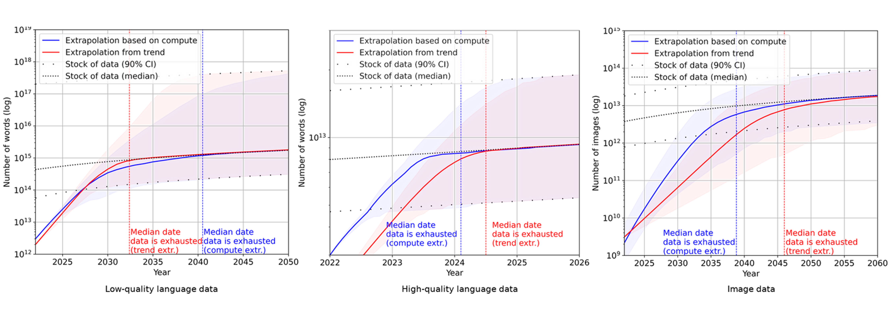

AI 기업과 언론 미디어와의 만남
- 4월 29일 OpenAI가 영국의 파이낸셜타임스(FT)와 파트너십을 체결했습니다
-
OpenAI는 FT의 디지털 콘텐츠를 활용해 AI 모델을 강화할 계획입니다. FT는 자사 독자들을 위한 새로운 AI 제품과 기능을 개발하는 데 OpenAI의 지원을 받고요. 두 기업 간의 구체적인 계약 조건은 밝히지 않았습니다. OpenAI는 FT에 그치지 않고 CNN, 폭스, 타임 등 미국의 언론사와도 콘텐츠 사용 계약을 논의 중입니다.
- OpenAI는 작년 AP통신을 시작으로, 언론사와의 계약을 늘리고 있습니다.
-
지난해 7월, OpenAI는 AP통신과 뉴스 공유 및 기술 제휴 계약을 체결했습니다. 미국 언론사의 뉴스 공유 협약은 이때가 처음이었습니다. 이 협약으로 OpenAI는 1985년 이후의 AP기사를 사용할 권한을 갖게 되었습니다. 물론 이 때도 계약 금액이 얼마인지는 공개되지 않았습니다. 5개월 뒤인 12월에는 독일의 악셀 스프링거 미디어 그룹과 계약을 체결했습니다. 사실 악셀 스프링거는 OpenAI를 상대로 저작권 소송을 제기하는 무리에 속할 것이라는 소문이 돌기도 했었는데, 전격적으로 협력 선언을 한 셈이죠. 악셀 스프링거 미디어 그룹에는 폴리티코, 비즈니스 인사이더 등이 포함됩니다. 추가로 OpenAI는 올해 3월에도 프랑스의 르몽드, 스페인의 프리사와 파트너십을 체결했습니다.
- 구글은 세계 최대 미디어그룹인 뉴스코프와 계약을 체결했습니다.
-
뉴스코퍼레이션은 미 월스트리트저널, 영국의 더 타임스, 호주의 유로 방송 등의 모회사입니다. 구글은 AI 모델 학습을 위해 월스트리트저널 등의 데이터를 활용할 수 있게 됩니다. 이를 대가로 구글은 연간 500만 달러에서 600만 달러의 비용을 지급하기로 했습니다.
NYT와 OpenAI와의 소송전
- 지난해 12월 뉴욕타임스는 OpenAI와 MS를 상대로 소송을 제기했습니다.
-
OpenAI와 MS가 뉴욕타임스의 콘텐츠를 무단으로 사용해 AI를 훈련시켰다는 이유였죠. 뉴욕타임스는 자사 기사는 연간 수 억 달러를 들여 고용하고 있는 언론인들의 작품인데, 두 기업들이 무단으로 자사 기사를 이용해 ’경쟁상품’을 만들었다고 이야기합니다. 두 기업이 NYT에 미친 손해는 수십억 달러에 이를 것이라 주장하죠.
- 4월 30일엔 미국의 일간지 8곳도 OpenAI와 MS를 저작권 침해로 소송을 걸었습니다.
-
미 헤지펀드 알덴 글로벌 캐피털이 소유한 8개 일간지가 마찬가지 이유로 두 기업을 고소했습니다. 알덴 글로벌 캐피털은 미국에서 두 번째로 큰 신문 운영사인데요, 뉴욕 데일리 뉴스, 시카고 트리뷴 등이 여기 소속입니다. 이보다 앞서 지난 2월엔 미국 인터넷 3개 매체도 OpenAI와 MS를 뉴욕 남부지법에 제소했습니다.
- IT 기업은 미 저작권법의 ‘공정 이용’ 항목으로 방어합니다.
-
미국 저작권법에는 저작권 침해로 인정되지 않는 예외 조항이 있습니다. 저작권 법 107번 조항의 공정 이용(Faire Use)의 네 가지 기준에 맞으면 저작권자의 동의 없이도 창작물의 사용이 법적으로 허용되죠. 비상업적 목적으로 사용되는지, 창작물을 변형시켜 사용하는지 등 각 기준에 대해 OpenAI와 MS는 법리적으로 대응할 계획입니다. 추가적으로 OpenAI는 뉴욕타임스가 제시한 저작권 침해 사례들이 챗GPT 등을 해킹해 만든 것이라고 소송을 기각해야 한다는 취지의 의견서를 제출하기도 했습니다.
뉴스 미디어와 AI
- 언론사들은 AI 검색이 웹 트래픽을 다 뺏어갈 수 있다고 우려합니다.
-
과거엔 검색엔진에서 정보를 찾고, 뉴스 사이트에서 기사를 살펴봤다면, 이제는 AI 챗봇이 뉴스 사이트의 기사 소스를 바탕으로 자료를 요약해서 제공해 줄 수 있습니다. 당연히 뉴스 웹사이트의 트래픽은 이전보다 줄어들겠죠. 미국 잡지 <디 애틀랜틱>은 구글이 AI 검색으로 전환될 경우 구글을 통해 발생하는 트래픽의 20~40%가 손실될 것으로 예측했습니다. 악셀 스프링거의 CEO는 AI와 대규모 언어 모델이 저널리즘과 미디어 브랜드를 파괴할 수 있다고 경고했습니다. 물론 콘텐츠 사용 계약은 맺었지만요.
- 하지만 Z 세대의 64%, 밀레니얼 세대의 53%는 검색엔진 대신 AI 툴을 쓰고 있습니다.
-
The Vergy의 조사에 따르면 미국의 젊은 층은 이미 AI 툴로 정보를 찾는 게 익숙합니다. 베이비붐 세대조차도 16%는 AI 툴을 활용합니다. 미국인 5명 중 2명이 AI 툴을 이용하는 꼴이죠.
- 자체 AI를 발표한 언론사도 있지만 전망이 그리 밝진 않습니다.
-
블룸버그는 자사가 가지고 있는 경제 데이터 등을 활용한 AI 모델, 블룸버그GPT를 발표했습니다. 하지만 모델 개발에 드는 막대한 비용 대비, 그만큼의 효용이 있느냐에 대해선 물음표가 생기죠. 취재와 제작에 투입되는 자원도 부족한 마당에 LLM 모델을 개발하고, 운영하고, 고도화시키기엔 큰 부담이 됩니다. 오히려 잘 갖춰진 LLM에 파인 튜닝, 프롬프트 엔지니어링, RAG 등을 활용하는 게 낫죠.
-
모델 개발은 어려워도 AI 기술은 미디어 시장에 조금씩 스며들고 있습니다. 일단 뉴욕타임스에서는 생성형 AI를 활용한 광고 툴을 출시할 예정입니다. 광고 캠페인이 가장 효과적으로 작용할 곳을 찾기 위한 툴이라고 하네요.
데이터 확보에 목을 메는 이유

- 2년 내 LLM 학습 데이터가 고갈될 것이라는 전망이 나왔습니다.
-
(일반적으로) 많은 데이터를 학습할수록 AI 모델은 더 뛰어난 능력을 발휘합니다. 그래서 많은 기업들이 더 많은 데이터를 학습에 투입하기 위해 끌어 모으고 있죠. 하지만 모델이 학습하는 데이터 규모가 성장하는 속도가 워낙 빠르다는 게 문제입니다. Epoch AI에서는 현재의 데이터 소비와 생산 속도가 유지될 경우 고품질의 언어 데이터는 2026년 전에 고갈될 것으로 예측했습니다. Epoch AI의 예측이 맞다면 앞으로 2년 내에 고품질 언어 데이터가 사라질 위험이 있다는 거죠. AI 모델을 고도화시키는 기업 입장에선 데이터 확보가 최우선 과제로 떠오른 셈입니다.
- 데이터의 규모가 한정된 상황에서 기업들은 다른 방법을 고민해봐야 합니다.
-
일단 공개된 데이터가 부족하다면 공개되지 않은 유료 데이터들을 구매하는 방법도 있을 겁니다. OpenAI의 미디어 파트너십 전략처럼 말이죠. OepnAI는 이뿐만 아니라 공개된 YouTube 동영상 트랜스크립션으로 훈련시키는 방안을 논의 중이라고 합니다. MS는 그 대안으로 규모는 작지만 좋은 데이터를 활용해 모델 성능을 개선하는 실험을 진행 중입니다. 최근 소규모 데이터로 학습한 sLM phi-3이 공개되기도 했습니다.
세계 최초 AI 규제법 통과시킨 EU
- 그런 와중에 유럽연합이 세계 최초로 AI에 대한 포괄적인 규제 법안 EU AI act를 통과시켰습니다.
-
유럽의회 본회의에서 찬성 523표, 반대 46표, 기권 49표로 가결되었고요. 법안은 발효 6개월 뒤부터 순차적으로 시행됩니다. 전 세계 최초의 AI 규제법이 다른 국가들에게 시사하는 바는 큽니다. 특히 우리나라는 AI 규제 관련 논의가 이제 시작 단계에 있는 만큼 EU의 법안을 잘 참고해야 할 겁니다.
- EU AI act에선 AI를 위험 등급에 따라 4단계로 나누어 서로 다른 규제를 적용합니다.
-
이번 법안의 핵심은 AI를 네 단계의 위험 등급으로 나누어 각각에 맞춤형 규제 제도를 만들었다는 점입니다. 수용 불가능한 위험(Unacceptable Risk)을 갖고 있는 AI 분야는 원천적으로 금지하고, 고위험(High Risk) AI엔 의무 요건을 준수하고, 제한적 위험(Limited Risk)이 있는 AI엔 투명성 의무를 준수해야 하고, 저위험(Minimal Risk) AI의 경우 의무 사항이 없는 식으로 차등 적용했습니다. 인간과 상호작용 하는 AI의 경우 제한적 위험 등급으로 구분되기에 투명성 의무 규제가 적용됩니다.
- 범용 AI 모델을 만드는 기업들은 더 투명해져야 합니다.
-
챗GPT 같은 범용 AI 모델을 만드는 기업들은 AI 모델의 훈련, 시험 과정, 평가 결과를 포함한 기술 문서를 작성해야 합니다. 또 AI 모델 학습에 사용된 학습 데이터를 공개해야 합니다. AI 모델 학습에 사용된 콘텐츠가 무엇인지 “충분히 상세한 요약”을 공개적으로 제공해야 하는 거죠.
- 최근 구글이 프랑스에서 2억 5천만 유로의 벌금을 부과받은 일이 있습니다.
-
구글이 프랑스에서 언론사 데이터를 허락 없이 Gemini 학습에 사용했기 때문인데요. 구글은 보도자료를 통해 “저작권 소유자와 당국에 알리지 않고” 바드 훈련을 위해 언론사 콘텐츠 사용했다고 밝혔습니다.
- 앞으로 저작권법은 데이터 소유 기업을 더 적극적으로 보호할 겁니다.
-
EU 저작권 지침 4조에는 텍스트 및 데이터마이닝에 대한 예외, 제한 조건을 다룹니다. 여기에는 텍스트 및 데이터마이닝을 목적으로 합법적으로 접근 가능한 저작물 및 기타 주제의 복제 및 추출에 대해 명시되어 있습니다. 프랑스 당국은 “인공지능 서비스를 학습시키기 위해 뉴스 콘텐츠를 사용하는 것이 인접권 및 보호 대상에 해당하는지 여부와 관련한 답은 아직 없다”면서도, “구글이 언론사에게 콘텐츠가 바드 훈련에 사용되었다는 사실을 알리지 않음으로써 4조 1항을 위반한 것으로 간주한다”며 벌금을 부과했습니다. EU AI act에서 저작권 지침 준수 내용이 포함되고, 투명성 요건도 도입된 만큼 앞으로 언론사들이 EU 저작권법에 따라 정당한 보상을 받는 것이 더 쉬워질 수 있습니다.